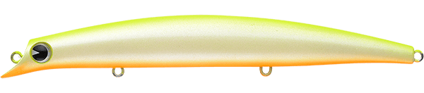
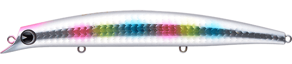
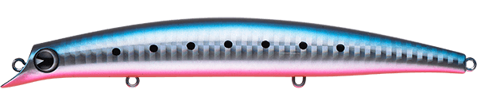
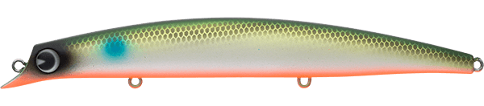

サスケ140S裂風
（sasuke 140S 裂風）
サスケ140S裂風はima（アイマ）のシンキングミノーです。
“ベスト・オブ・ヒラスズキルアー”とも呼ばれる「sasuke 140 裂波」をシンキング化したモデル。高い遠投性能に加えて、荒れた状況や足場の高いポイントでの操作性に優れ、流れに乗せるドリフトや細かい誘いも得意です。

画像出典:ima公式HP
スペック
- メーカー
- ima（アイマ）
- タイプ
- シンキング（ミノー）
- 全長
- 140mm
- 自重
- 21g
- レンジ
- 70〜100cm
- アクション
- ウォブンロール
- フック
- #3
- リング
- #4
- ターゲット
- シーバス
- 価格
- 2,750円（税込）
▼今すぐチェック

サスケ140S裂風の特徴
ラフなコンディションで、140裂波の一枚下を攻略する
-
140裂波をシンキング化
ベースはシリーズの代表作「sasuke 140 裂波」。シンキングにしたことで水馴染みが良く、波が高い日でも水面から飛び出しにくく、狙ったレンジをキープできます。
-
足場の高いポイントでも操作しやすい
沈む分だけラインスラックの影響を受けにくく、磯や堤防など足場の高い場所からでもルアーを水中にとどめたまま操作できます。
-
流れに乗せるドリフトが得意
シンキングならではの、流れに乗せて送り込むドリフトテクニックや、ロッドワークでの細かい誘いも得意。ゆったりとしたウォブンロールで食わせの間を作れます。
サスケ140S裂風の使い方
キャスト後、狙うレンジまでカウントダウンしてからのただ巻きが基本。スロー〜ミディアムの一定速度で、ウォブンロールを生かして引きます。
河川や河口では、流れの上流側に投げてラインを張りすぎずに流し込むドリフトが効果的。明暗の境目や流れのヨレに、ルアーを自然に送り込みましょう。
サスケ140S裂風の得意な状況
風や波が強いラフなコンディション、足場が高く表層のミノーが浮き上がってしまうポイント。140裂波で反応がないときに、一枚下のレンジを同じアクションで探りたいときにも出番です。
ワンポイント
フックは#3と140mmクラスとしては大きめの設定。ランカーシーバスやヒラスズキとのやり取りも想定されているので、荒れた日の大型狙いに安心して投げられます。
サスケ裂波・裂風シリーズの使い分け
| モデル | 全長／自重 | 得意な場面 |
|---|---|---|
| sasuke 120 裂波 | 120mm／17g | フローティング。シャローを引き波立てながら探りたいときに |
| sasuke 120S 裂風 | 120mm／18g | シンキング。120裂波の一枚下のレンジをスローに引きたいときに |
| sasuke 140S 裂風 | 140mm／21g | シンキング。荒れた日や足場の高いポイントで飛距離と操作性が欲しいときに |
| sasuke 140S 真裂風 | 140mm／26g | シンキング（2026年11月発売）。アクションを抑えて、さらに遠く・深くを攻めたいときに |
フローティングの「裂波」はシャロー、シンキングの「裂風」はその一枚下のレンジ、と覚えると使い分けやすくなります。ベイトのサイズに合わせて120と140を選び、風や波が強い日ほどシンキングの裂風が出番です。
人気カラー
公式ラインナップ12色から4色を紹介します（カラー名は公式の表記のまま）。

チャートバックパールチャートの背中にパールボディ。濁り気味の日や朝夕のローライトで、視認性とアピールを両立したいときに。

コットンキャンディーパールホワイトに虹色の玉模様とピンクヘッド。夜の常夜灯周りや、少し目立たせたいけれど強すぎないアピールが欲しいときに。

マコイワシイワシを意識したリアル系カラー。カタクチイワシなどの小魚がベイトの日中に。

パールボラOBパールホワイトにボラ柄、オレンジベリーのカラー。ボラ・イナッコ付きのシーバスや、濁りが入ったときに。
画像出典:ima公式HP
サスケ140S裂風に似ているルアー
-
 サスケ140S真裂風
ima
詳細はこちら＞
サスケ140S真裂風
ima
詳細はこちら＞
同じ140Sの新作。アクションを抑えて、より遠く・深くを攻めたいときに。
-
 セットアッパー145S-DR
ダイワ
詳細はこちら＞
セットアッパー145S-DR
ダイワ
詳細はこちら＞
145mm・39gのシンキングミノー。もっと重さと飛距離が欲しいときに。
-
 ブローウィン140S
ブルーブルー
詳細はこちら＞
ブローウィン140S
ブルーブルー
詳細はこちら＞
140mm・23gのシンキングミノー。同じサイズ感でローテーションしたいときに。